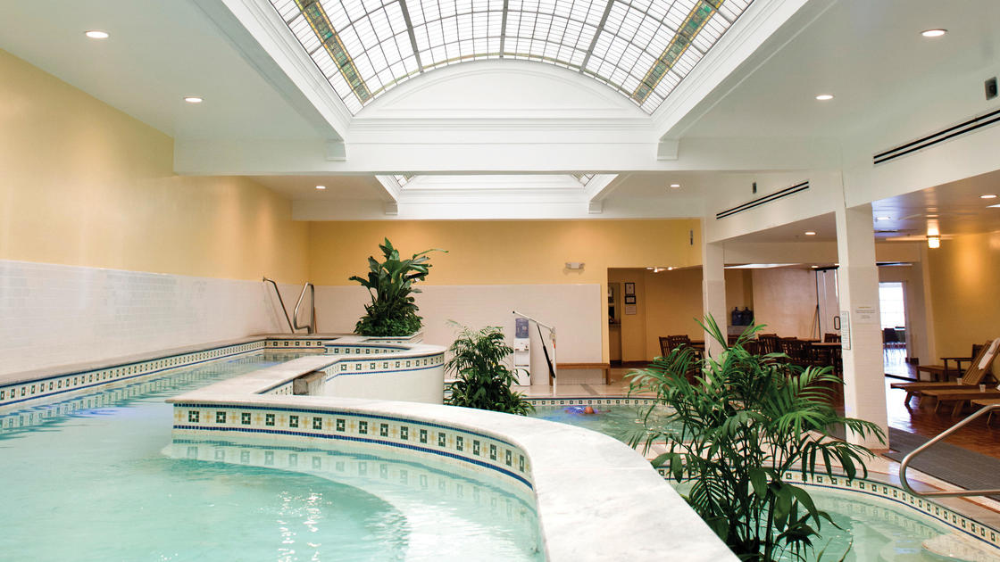

Hot Springs, Arkansas, where the soothing waters of natural hot springs beckon visitors to relax and rejuvenate amidst picturesque surroundings. As one of the nation's oldest and most cherished spa destinations, Hot Springs offers a perfect blend of historic charm, outdoor adventures, and therapeutic idulgence for travelers seeking an unforgettable retreat.
Al Capone, infamous for his reign as a ruthless mob boss during the Prohibition era, also had significant ties to Hot Springs, Arkansas. In the 1920s, Hot Springs was a popular resort town known for its therapeutic mineral springs and bustling nightlife, making it an ideal location for Capone to conduct his illegal activities away from the scrutiny of law enforcement. Capone frequented the city, utilizing its numerous casinos, brothels, and speakeasies as fronts for his bootlegging and gambling operations. His influence extended deep into the city's political and law enforcement circles, allowing him to operate with relative impunity. Despite efforts by authorities to crack down on organized crime, Capone's connections and resources made him a formidable figure in Hot Springs, leaving an indelible mark on the city's history.